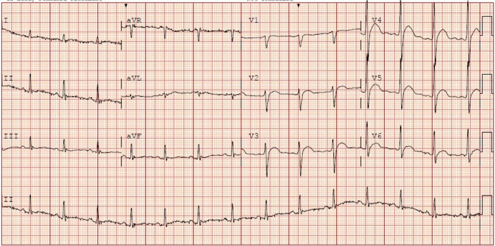
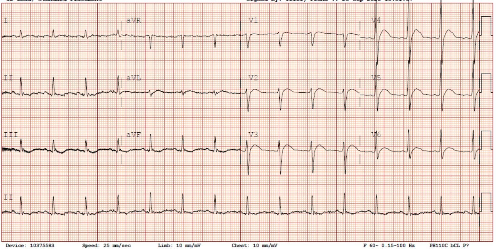
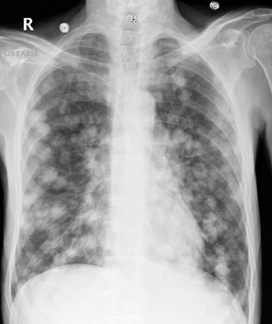
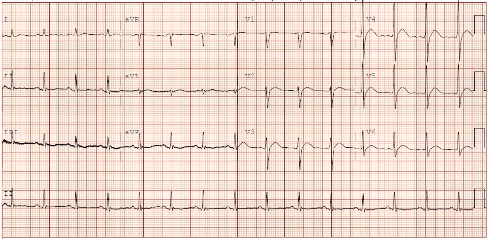
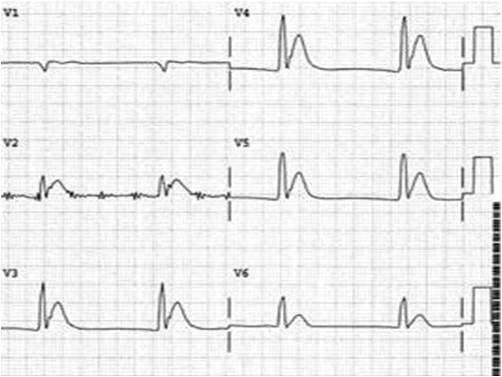
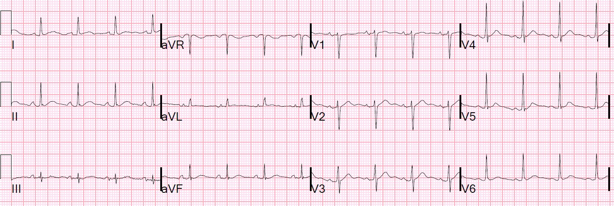
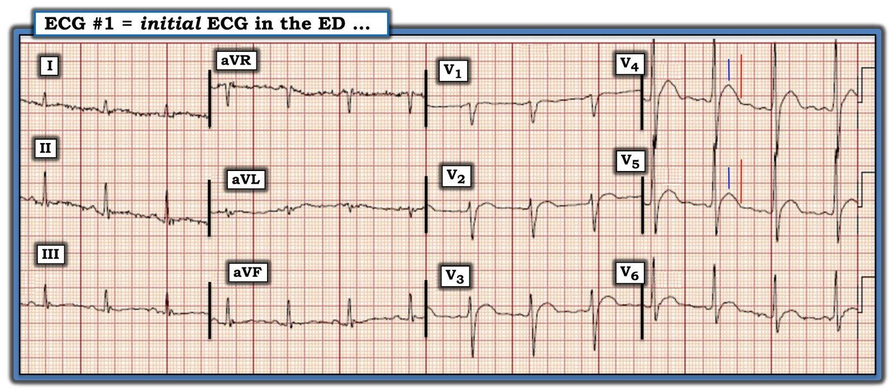
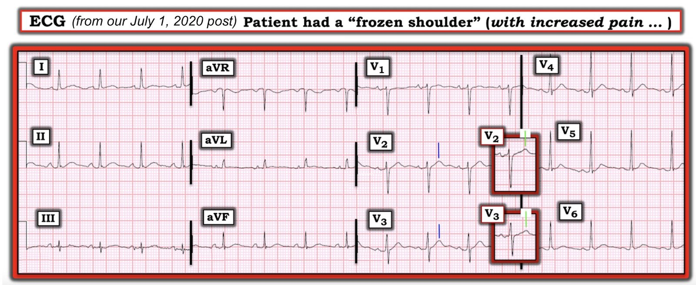
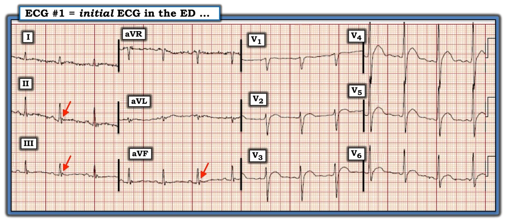

30/10/2020 — Mệt mỏi và yếu cùng kết quả đọc STEMI bằng máy tính
Bản dịch tiếng Việt của bài "Fatigue and Weakness and a computer interpretation of STEMI" – Dr. Smith’s ECG Blog. Giữ nguyên toàn bộ 12 hình ảnh của bản gốc.
Ca này được gửi tới bởi David Carroll, bác sĩ nội trú Cấp cứu năm thứ 2, và bác sĩ điều trị chính của anh là Brad Caloia.
Một bệnh nhân nam 60 mấy tuổi đến khoa cấp cứu (ED) vì yếu và mệt mỏi. Ông được chẩn đoán hội chứng nhiễm virus và cho về.
Sau đó ông quay lại và được làm xét nghiệm cùng điện tâm đồ. Ông không có tiền sử bệnh tim. Không đau ngực, không khó thở.
Đây là điện tâm đồ của ông:


Kết quả đọc bằng máy tính:
Tần số: 93 | PR 146 | QRSD 112 | QT/QTc(Bazett) 353/439
Nhịp xoang bình thường
Nhồi máu thành trước bên, cấp / ***NHỒI MÁU CƠ TIM CẤP (ACUTE MI)***
Bạn nghĩ gì?
Dr. Carroll đã tinh ý nhận ra có điều gì đó không ổn: đó là gì?
Không có đoạn ST (tức là đoạn ST cực kỳ ngắn). Sóng T theo ngay sau điểm kết thúc QRS. Ngoài ra còn có sóng T dạng vòm. Cả hai đặc điểm này đều điển hình của tăng calci máu, và Dr. Carroll đã nhận ra điều đó. Tuy nhiên, thông thường đoạn ST ngắn cũng làm QT ngắn. Nhưng trong ca này, QT được máy tính đo chính xác. Sóng T dạng vòm giả STEMI.
Là một bác sĩ lâm sàng cẩn thận, trong lúc chờ kết quả xét nghiệm máu, anh đã ghi thêm một điện tâm đồ khác 33 phút sau đó:


Bản ghi này trông không khác nhiều
Tôi nghĩ QRS rộng hơn một chút
Calci trả về là 20,0 mg/dL (gấp đôi bình thường). Ông được bắt đầu điều trị tăng calci máu và được chụp X-quang ngực:


Ung thư di căn
6 giờ sau, calci giảm xuống còn 14,5 và một điện tâm đồ khác được ghi:


Đoạn ST vẫn ngắn. Sóng T bớt dạng vòm hơn. Nhưng QT vẫn như cũ.
Dưới đây là 2 ví dụ khác về tăng calci máu, cả hai đều có QT ngắn và đoạn ST ngắn:
Bản ghi này lấy từ sách của K.Wang (chỉ có V1-V6):


Các ca này liên quan với nhau như thế nào?


Những điểm cần học:
1. Tăng calci máu làm ngắn đoạn ST
2. QT có thể bình thường khi đoạn ST ngắn nếu phần còn lại của QT dài

===================================
BÌNH LUẬN CỦA TÔI, bởi KEN GRAUER, MD (30/10/2020):
===================================
Tôi nghĩ ca hôm nay là một ví dụ tuyệt vời về một dấu hiệu điện tâm đồ quan trọng thường bị bỏ sót. GHI NHẬN CÔNG LAO của Dr. David Carroll — người đã nhanh chóng phát hiện ra dấu hiệu này!
- Mặc dù trong ca này có 3 điện tâm đồ liên tiếp được trình bày ở trên — tôi không nghĩ giữa chúng có khác biệt đáng kể. Vì vậy — tôi tập trung bình luận vào điện tâm đồ ban đầu, được tôi trình bày lại ở Hình 1.


Hình 1: Điện tâm đồ ban đầu trong ca hôm nay (Xem bài).
SUY NGHĨ CỦA TÔI về điện tâm đồ #1:
Như chúng tôi nhấn mạnh nhiều lần — Bệnh sử là cực kỳ quan trọng (!) để đọc điện tâm đồ trên lâm sàng một cách tối ưu. Lý do đến khám của người đàn ông 60 mấy tuổi có điện tâm đồ ở Hình 1 là yếu và mệt mỏi — chứ không phải đau ngực!
- Mặc dù tôi đã nhiều lần lưu ý đến thực thể “nhồi máu cơ tim thầm lặng”, trong đó OMI cấp có thể xảy ra mà không có đau ngực — bệnh sử trong ca hôm nay nên ưu tiên nâng cao cảnh giác về một nguyên nhân không–do tim có thể gây yếu và mệt mỏi ở bệnh nhân này.
- Về bản thân điện tâm đồ — nhịp ở điện tâm đồ #1 là nhịp xoang với tần số ~85/phút. Mọi khoảng (PR, QRS, QTc) và trục đều bình thường. Không có lớn buồng tim.
Về Thay đổi Q–R–S–T ở điện tâm đồ #1:
- Không có sóng Q (ngoại trừ ở chuyển đạo aVR, vốn không có ý nghĩa lâm sàng).
- Tăng tiến sóng R bình thường (vùng chuyển tiếp, nơi sóng R trở nên cao hơn độ sâu của sóng S, xảy ra bình thường, giữa chuyển đạo V3 và V4). Sóng S vẫn tồn tại đến tận chuyển đạo V6.
- Có đoạn ST dạng vòm (coving) ở các chuyển đạo V2 đến V6. Có vẻ như có ST chênh lên đôi chút ở từng chuyển đạo này — dù rất khó định lượng mức ST chênh lên tại điểm J vì đoạn ST dạng vòm trơn đến vậy. Có sóng ST-T dẹt không đặc hiệu ở từng chuyển đạo chi.
Tổng hợp lại tất cả: Về NHẬN ĐỊNH lâm sàng của tôi đối với các dấu hiệu điện tâm đồ đã nêu ở trên trong điện tâm đồ #1 — tôi muốn làm nổi bật những điểm sau:
- ĐIỂM THEN CHỐT (PEARL) #1 — Có nhiễu đường nền đáng kể ở các chuyển đạo chi của điện tâm đồ #1. Như tôi đã lưu ý trước đây — cách DỄ để nhanh chóng xác định chi “thủ phạm” gây nhiễu là xem LIỆU nhiễu có tối đa ở 2 chuyển đạo chi, và ở 1 chuyển đạo tăng thế hay không. Theo tam giác Einthoven — vì nhiễu ở điện tâm đồ #1 tối đa ở các chuyển đạo chi I và II — và ở chuyển đạo tăng thế aVR — nên chi “thủ phạm” nhiều khả năng nhất là do một vấn đề (tức là run) ở RA ( = Right Arm – tay phải).
- LƯU Ý: Để xem mô tả chi tiết về CÁCH xác định “chi thủ phạm” gây nhiễu — Xin XEM Bình luận của tôi ở cuối trang trong bài ngày 27 tháng Chín năm 2019 trên Dr. Smith’s ECG Blog.
ĐIỂM THEN CHỐT (PEARL) #2: Theo tính toán của Dr. Smith ở trên — khoảng QTc là bình thường ở điện tâm đồ #1.
- Tôi đo được khoảng QT là 350 ms ở một số chuyển đạo ngực, và với tần số tim ~85/phút — tôi ước tính QT corrected-for-rate (QT hiệu chỉnh theo tần số) là ~420 ms ( = rõ ràng nằm trong giới hạn bình thường).
- Dù vậy, mặc dù giá trị QTc bình thường này — khoảng QT “trông” ngắn! Như Dr. Smith đã lưu ý ở trên — lý do QTc trông ngắn là vì gần như không có đoạn ST ở điện tâm đồ #1.
- Mặc dù ST dạng vòm kèm ST chênh lên tại điểm J ở một số chuyển đạo ngực liên tiếp rõ ràng có thể là hậu quả của thiếu máu cục bộ cấp — chúng ta cần nhớ rằng chẩn đoán phân biệt của QTc (hoặc QTc trông ngắn) ngắn là hạn chế = các hội chứng QT ngắn và/hoặc tăng calci máu.
- Cũng nên nhớ rằng QTc có xu hướng dài hơn trong bệnh tim thiếu máu cục bộ cấp. Việc QTc không dài hơn ở điện tâm đồ #1 ủng hộ một căn nguyên không do thiếu máu cục bộ.
Tăng calci máu ở mức ít nhất là trung bình (tức là calci huyết thanh >12 mg/dL) không phải là chẩn đoán thường gặp trong một quần thể bệnh nhân khoa cấp cứu không chọn lọc. Thay vào đó, tỷ lệ hiện mắc của rối loạn điện giải này sẽ cao hơn nhiều trong quần thể bệnh nhân ung bướu (tức là hơn 90% bệnh nhân tăng calci máu có cường cận giáp nguyên phát hoặc bệnh ác tính).
- Đây chính là lúc Bệnh sử trong ca hôm nay phát huy vai trò — vì người đàn ông 60 mấy tuổi này đến khám vì yếu và mệt mỏi, nhưng không đau ngực (tức là Bệnh ác tính nổi lên như một khả năng chẩn đoán cần cân nhắc).
- ĐIỂM THEN CHỐT (PEARL) #3: Mặc dù sách giáo khoa thường chỉ mô tả dấu hiệu điện tâm đồ của tăng calci máu là “khoảng QT ngắn lại” — QT ngắn lại không phải là một dấu hiệu điện tâm đồ dễ nhận ra (ngay cả khi bạn đang tìm nó!). Ngoài ra, điều sách giáo khoa không mô tả — là calci huyết thanh (Ca++) phải tăng cao đến mức nào thì khoảng QT mới ngắn lại như vậy. Trong 3 thập kỷ làm bác sĩ điều trị chính ngành y học gia đình (làm việc cả trong lẫn ngoài bệnh viện) — tôi đã chăm chú soi xét điện tâm đồ của tất cả bệnh nhân tôi gặp có calci huyết thanh tăng. Theo kinh nghiệm của tôi — KHÔNG có thay đổi nào về hình dạng điện tâm đồ ở tuyệt đại đa số bệnh nhân tăng calci máu cho đến khi nồng độ Ca++ huyết thanh tăng đáng kể (tức là thường trên 12 mg/dL). Vì vậy — đừng mong phát hiện tăng calci máu trên điện tâm đồ trừ khi Ca++ huyết thanh tăng rất nhiều.
- ĐIỂM THEN CHỐT (PEARL) #4: Không chỉ đơn thuần là khoảng QT “ngắn lại” — dấu hiệu điện tâm đồ chủ yếu của tăng calci máu đáng kể là khoảng từ Q đến đỉnh T ngắn . Ý tôi là thời gian để sóng T đạt tới đỉnh bị rút ngắn khi tăng calci máu đáng kể. Tôi không biết phép đo nào để định lượng thời gian đến đỉnh sóng T bị rút ngắn này. Thay vào đó — đây là một đánh giá chủ quan — mà với kinh nghiệm (cùng với mức độ nghi ngờ cao hơn đối với ca đang xét) BẠN có thể học để nhận ra.
- Về điện tâm đồ #1 — Tôi thấy cực kỳ khó nhận ra thời gian đến đỉnh sóng T trên bản ghi này vì đoạn ST dạng vòm trơn đến vậy ở hầu hết các chuyển đạo ngực. Tôi đã vẽ các đường thẳng đứng màu XANH LAM ở chuyển đạo V4 và V5 của điện tâm đồ #1 tại điểm mà tôi nghĩ thấy rõ “đỉnh” ở các chuyển đạo này. Một cách chủ quan — thời gian để đạt tới đỉnh sóng T này có vẻ ngắn đối với tôi khi so với đường thẳng đứng màu ĐỎ đánh dấu điểm kết thúc sóng T ở các chuyển đạo này.
CA BỆNH TIẾP DIỄN: Như đã bàn ở trên — nồng độ Ca++ huyết thanh lấy tại thời điểm ghi điện tâm đồ #1 tăng vọt lên 20,0 mg/dL. Ung thư di căn lan tỏa hiện rõ trên X-quang ngực.
- Như tôi đã lưu ý trước đó — tôi không thấy thay đổi đáng kể ở 2 điện tâm đồ trình bày ở trên được ghi sau điện tâm đồ #1 (mặc dù Ca++ huyết thanh đã giảm đáng kể xuống 14,5 mg/dL vào thời điểm ghi điện tâm đồ thứ 3 ở trên).
ĐIỂM THEN CHỐT (PEARL) #5: Để minh họa rõ hơn ý tôi về khoảng từ Q đến đỉnh T ngắn — tôi trình bày lại một điện tâm đồ từ Bình luận của tôi ở cuối trang trong bài ngày 1 tháng Bảy năm 2020 trên Dr. Smith’s ECG Blog (Hình 2).
- Một lần nữa — Bệnh sử trong ca ngày 1 tháng Bảy năm 2020 đó rất có giá trị gợi ý. Những năm làm chăm sóc ban đầu đã dạy tôi phải dè chừng với bệnh nhân lớn tuổi đến khám với bệnh sử bất thường về cơn đau không điển hình ở một vị trí cụ thể nào đó trên cơ thể. Mặc dù rõ ràng bệnh nhân bị “đông cứng khớp vai” (frozen shoulder) có thể có những đợt đau vai nặng lên — tôi lập tức nghi ngờ, sau khi nghe bệnh sử này và xem điện tâm đồ ở Hình 2, rằng bệnh nhân bị tăng calci máu thứ phát do bệnh ác tính. Dấu hiệu điện tâm đồ đáng chú ý trên bản ghi này là khoảng QTc ngắn.
- Các đường thẳng đứng màu XANH LAM ở chuyển đạo V2 và V3 của điện tâm đồ ngày 1 tháng Bảy năm 2020 này được đặt trên đỉnh sóng T ở các chuyển đạo đó. Chẳng phải thời gian để đạt tới đỉnh sóng T này “trông” ngắn sao? Nồng độ Ca++ huyết thanh tương ứng với điện tâm đồ này là 15 mg/dL — và bệnh nhân được phát hiện ung thư phổi di căn vai, giải thích cho tình trạng đau chi tăng lên.
- Bây giờ hãy nhìn các Ô chèn ở chuyển đạo V2 và V3 trong Hình 2. Tôi đã đặt vào trong mỗi ô chèn một phức bộ QRST từ điện tâm đồ ghi lại sau khi điều chỉnh nồng độ Ca++ huyết thanh tăng cao. Chẳng phải thời gian đến đỉnh sóng T (đánh dấu bằng các đường thẳng đứng màu XANH LÁ trong các ô chèn) giờ trông dài hơn (và bình thường hơn) sau khi điều chỉnh nồng độ Ca++ huyết thanh sao?
- ĐIỀU CỐT LÕI ( = Tổng hợp của tôi): Tôi không tìm thấy nhiều y văn về mối tương quan lâm sàng giữa các mức Ca++ huyết thanh khác nhau và thời gian đến đỉnh sóng T. Mặc dù nồng độ Ca++ huyết thanh cao ( = 20 mg/dL) có lẽ cao nhất mà bạn từng gặp ở bệnh nhân trong ca hôm nay — và mặc dù khoảng QT “trông” ngắn ở điện tâm đồ #1 — QTc (hiệu chỉnh theo tần số) của điện tâm đồ ở Hình 1 lại không ngắn. Việc nồng độ Ca++ huyết thanh giảm đáng kể ở lần xét nghiệm 6 giờ sau đó không làm thay đổi rõ rệt hình dạng điện tâm đồ. Ngược lại — điện tâm đồ ở Hình 2 thực sự cho thấy những thay đổi điện tâm đồ tinh tế-nhưng-có-thật của tăng calci máu, và những thay đổi này đã cải thiện khi nồng độ Ca++ huyết thanh trở về bình thường. “Quan điểm” của tôi — Mỗi bệnh nhân mỗi khác, và ngay cả khi có kinh nghiệm thì việc nhận ra những thay đổi điện tâm đồ tinh tế ở nhiều bệnh nhân tăng calci máu vẫn là một thách thức.
- ĐIỂM THEN CHỐT CUỐI CÙNG (PEARL): Nắm được bệnh sử lâm sàng thường mang lại sự hỗ trợ vô giá khi đọc những bản ghi như các điện tâm đồ ở Hình 1 và 2.


Hình 2: Điện tâm đồ này được trình bày lại từ Bình luận của tôi trong bài ngày 1 tháng Bảy năm 2020 trên Dr. Smith’s ECG Blog (Xem bài).
T.B. (P.S.) —Để xem thêm một ví dụ về ST chênh lên do tăng calci máu — BẤM VÀO ĐÂY —

PHẦN BỔ SUNG (2/11/2020):
Xin ghi nhận công lao của Praneet Manekar — người đã phát hiện thêm một dấu hiệu liên quan đến tăng calci máu. Sẽ là thiếu sót nếu tôi không bổ sung điều này vào Bình luận của tôi. Như tôi đã nêu nhiều lần — mặc dù sóng Osborn thường gặp nhất trong hạ thân nhiệt — đôi khi chúng có thể gặp trong những tình trạng khác (XEM Bình luận của tôi ở cuối trang trong bài ngày 22 tháng Mười Một năm 2019 trên Dr. Smith’s ECG Blog).
- Sóng Osborn được mô tả là một sóng lệch có dạng vòm hoặc bướu, xuất hiện tại điểm mà phần cuối phức bộ QRS nối với phần đầu đoạn ST. Đây là điểm J (tức là nó nối (Joins) phần cuối QRS với phần đầu đoạn ST) — vì vậy sóng Osborn là những sóng điểm J bị phóng đại.
- Ngoài hạ thân nhiệt — sóng Osborn đã được báo cáo trong chấn thương não, xuất huyết dưới nhện, hội chứng Brugada, ngừng tim do rung thất (VFib), thiếu máu cục bộ nặng — và, như trong ca trên, tăng calci máu (các mũi tên ĐỎ ở các chuyển đạo thành dưới của điện tâm đồ #1 — như thể hiện ở Hình 3).
- Tôi rất muốn được xem một điện tâm đồ theo dõi của bệnh nhân này sau khi Ca++ huyết thanh đã trở về bình thường — để xem các sóng Osborn ở chuyển đạo thành dưới này có biến mất hay không. (Otero & Lenihan cho thấy sóng Osborn do tăng calci máu biến mất sau khi điều chỉnh Ca++ huyết thanh trong báo cáo ca bệnh này — Tex Heart Inst J 27:316, 2000 ).
- Một lần nữa XIN CẢM ƠN Praneet Manekar.


Hình 3: Tôi đã thêm các mũi tên ĐỎ vào điện tâm đồ #1 để làm nổi bật các sóng Osborn do tăng calci máu ở các chuyển đạo thành dưới (Xem bài).